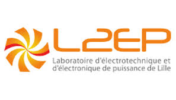

Professional Experience
-
 Senior System Engineer · Sonnen GmbH
Senior System Engineer · Sonnen GmbH -
System Engineer · Valeo
-
Hardware Engineer · IBM
-
System Design Engineer · FACT Group
-

Engineering Intern · L2EP Laboratory
Education
-
Master of Science in Engineering
Electrical Engineering · Sustainable Development (Rank: 5th/22) · Université de Lille / Centrale Lille / Arts et Métiers
Master's Thesis (L2EP): Design of Power Electronic Control Drive of a Doubly Fed Induction Generator Used in Large Wind Turbines
Electrical Machine Design & Drives: PMSM/SRM/IM
Powertrain System & BMS Modeling
-
Bachelor of Science in Engineering
Electronics·Electrical Energy·Automation(EEA)· (Rank: 23rd/121) Université de Lille
BS Engineering Project: Sizing BESS for passive houses
EEA Program Core Engineering Foundations: mathematics and physics, analog/digital electronics, signal analysis, Actuators & Machines drive, Embedded Control
-
High School Diploma
Sciences & Mathematics · Lycée Elhorreya de Maadi